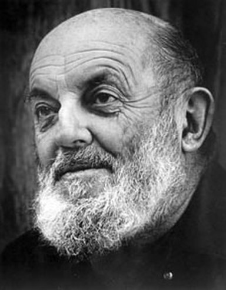
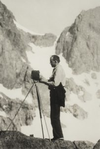
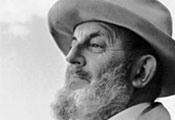

Ansel Adams, photographer and environmentalist, was born in San Francisco, California, the son of Charles Hitchcock Adams, a businessman, and Olive Bray. The grandson of a wealthy timber baron, Adams grew up in a house set amid the sand dunes of the Golden Gate. When Adams was only four, an aftershock of the great earthquake and fire of 1906 threw him to the ground and badly broke his nose, distinctly marking him for life. A year later the family fortune collapsed in the financial panic of 1907, and Adams’s father spent the rest of his life doggedly but fruitlessly attempting to recoup. An only child, Adams was born when his mother was nearly forty. His relatively elderly parents, affluent family history, and the live-in presence of his mother’s maiden sister and aged father all combined to create an environment that was decidedly Victorian and both socially and emotionally conservative. Adams’s mother spent much of her time brooding and fretting over her husband’s inability to restore the Adams fortune, leaving an ambivalent imprint on her son. Charles Adams, on the other hand, deeply and patiently influenced, encouraged, and supported his son.
ADAMS' PASSION FOR ENVIRONMENTAL CONSERVATION

In the history of American conservation, few have worked as long and as effectively to preserve wilderness and to articulate the “wilderness idea” as Ansel Adams. Entering his seventh decade of active involvement, he remains as much a crusader. Wilderness has always been for Adams “a mystique: a valid, intangible, non-materialistic experience.” Through his photographs he has touched countless people with a sense of that mystique and a realization of the importance of preserving the last remaining wilderness lands. This inspirational legacy of Adams ' art constitutes his major significance as an environmentalist. In addition, he has been an important activist in the work of several conservation groups and has personally lobbied congressmen, cabinet officers and Presidents on behalf of wilderness values. Ansel Adams was born on February 20, 1902, in San Francisco and grew up in the dunes area by the Golden Gate . In those days the Pacific surf and fog were a much more evident influence than the surrounding city. Ansel's earliest memory is of lying in his carriage watching low fog move across the sky.
APPRECIATION FOR WILDERNESS

Ansel Adams will be remembered for his wide range of conservation activities and his inspirational commitment over more than half a century. But his foremost contribution to “the American Earth” has been the remarkable impact of his photography on the consciousness of Americans. In the address entitled “The Role of the Artist in Conservation,” Adams declared, “I believe the approach of the artist and the approach of the environmentalist are fairly close in that both are, to a rather impressive degree, concerned with the ‘affirmation of life’….Response to natural beauty is one of the foundations of the environmental movement.” In a 1970 Chubb fellowship lecture at Yale University , he said, “Wilderness, to me at least, is a ‘mystique’; a valid, intangible, non-materialistic experience. The right to experience is a fundamental right, just as is the right to possess, the right to believe or the right to work or right to security. The concept that there are other (and equally important) values than those of obvious material and financial character is one that we must nourish and support to the utmost.” Adams has been referred to as “the visual John Muir.” As Muir’s contemporary writings had an inspirational effect on the appreciation of Americans for wilderness, Adams ‘ photography has had similar effect in modern times. Adams has celebrated the same essential qualities of wilderness as Muir and in particular has celebrated the same “ Range of Light ,” the Sierra Nevada . The broad philosophical effect on attitudes toward the natural world, while hard to quantify and isolate in terms of dates and numbers, is the most fundamental and important element of the environmental movement. It transcends any of the issues and events involved. It is the essence of Adams ‘ greatness that he has so eloquently communicated a philosophical vision of the land and our relationship to it. That vision, and its eloquence, is what make Ansel Adams one of the truly significant figures in environmental history. Brock Evans, now associate executive director of the Sierra Club, wrote a letter in 1968 to Ansel that movingly describes the impact of Ansel’s photography. “Ansel, I have never told you this,” the letter said, “but you are in a most direct way responsible in large part for my love of the land and my passion for my job. I was born and raised in Ohio , and never really had much contact with raw, wild nature, until about the spring of 1961. I was just finishing my first year at the University of Michigan Law School, and I happened to pick up a copy of ‘ Yosemite ,’ that beautiful book edited by Charlotte Mauk, with John Muir’s writings, and your incomparable pictures. I remember rushing back to my room all during final exams, reading and re-reading the book, being absorbed in the magnificent pictures, and playing beautiful music on my record player. It was like another world, and the words and the pictures stunned me and moved me more deeply about nature than I ever had been before. I had a job that summer in Glacier National Park, my first time to see any mountains; and, having already been prepared by the book, stepping off the train into the mountains and smelling the pines was as if a lost chord was touched deep inside me, and it has been humming ever since. I have looked now for seven years to try and find a copy of that book for my own, but apparently it is out of print and only available in libraries. But you were a hero to me, as you must be to many, many others, long before I ever knew you. Than beautiful book helped to change my life in ways that I still only vaguely understand.”
ANSEL ADAMS: A COMMUNICATOR

Adams described himself as a photographer — lecturer — writer. It would perhaps be more accurate to say that he was simply — indeed, compulsively — a communicator. He endlessly traveled the country in pursuit of both the natural beauty he revered and photographed and the audiences he required. Adams felt an intense commitment to promoting photography as a fine art and played a key role in the establishment of the first museum department of photography, at the Museum of Modern Art in New York. The work at the museum fostered the closest relationships of Adams’s life, with Beaumont and Nancy Newhall, a historian and museum administrator and a writer-designer, respectively. Their partnership was arguably the most potent collaboration in twentieth-century photography. In the 1950s and 1960s Nancy Newhall and Adams created a number of books and exhibitions of historic significance, particularly the Sierra Club’s This is the American Earth (1960), which, with Rachel Carson’s classic Silent Spring, played a seminal role in launching the first broad-based citizen environmental movement. Adams was an unremitting activist for the cause of wilderness and the environment. Over the years he attended innumerable meetings and wrote thousands of letters in support of his conservation philosophy to newspaper editors, Sierra Club and Wilderness Society colleagues, government bureaucrats, and politicians. However, his great influence came from his photography. His images became the symbols, the veritable icons, of wild America. When people thought about the national parks of the Sierra Club or nature of the environment itself, the often envisioned them in terms of an Ansel Adams photograph. His black-and-white images were not “realistic” documents of nature. Instead, they sought an intensification and purification of the psychological experience of natural beauty. He created a sense of the sublime magnificence of nature that infused the viewer with the emotional equivalent of wilderness, often more powerful than the actual thing. For Adams, the environmental issues of particular importance were Yosemite National Park, the national park system, and above all, the preservation of wilderness. He focused on what he termed the spiritual-emotional aspects of parks and wilderness and relentlessly resisted the Park Service’s “resortism,” which had led to the over development of the national parks and their domination by private concessionaires. But the range of issues in which Adams involved himself was encyclopedic. He fought for new parks and wilderness areas, for the Wilderness Act, for wild Alaska and his beloved Big Sur coast of central California, for the mighty redwoods, for endangered sea lions and sea otters, and for clean air and water. An advocate of balanced, restrained use of resources, Adams also fought relentlessly against overbuilt highways, billboards, and all manner of environmental mendacity and shortsightedness. Yet he invariably treated his opponents with respect and courtesy. Though wilderness and the environment were his grand passions, photography was his calling, his metier, his raison d’etre. Adams never made a creative photograph specifically for environmental purposes. On 12 April 1977 he wrote to his publisher, Tim Hill, “I know I shall be castigated by a large group of people today, but I was trained to assume that art related to the elusive quality of beauty and that the purpose of art was concerned with the elevation of the spirit (horrible Victorian notion!!)” Adams was often criticized for failing to include humans or evidence of “humanity” in his landscape photographs. The great French photographer Henri Cartier-Bresson made the well-known comment that “the world is falling to pieces and all Adams and Weston photograph is rocks and trees” (quoted by Adams, Oral History, Univ. of Calif., Berkeley, p. 498). Reviewers frequently characterize Adams as a photographer of an idealized wilderness that no longer exists. On the contrary, the places that Adams photographed are, with few exceptions, precisely those wilderness and park areas that have been preserved for all time. There is a vast amount of true and truly protected wilderness in America, much of it saved because of the efforts of Adams and his colleagues. Seen in a more traditional art history context, Adams was the last and defining figure in the romantic tradition of nineteenth-century American landscape painting and photography. Adams always claimed he was not “influenced,” but, consciously or unconsciously, he was firmly in the tradition of Thomas Cole, Frederic Church, Albert Bierstadt, Carlton Watkins, and Eadweard Muybridge. And he was the direct philosophical heir of the American Transcendentalists Ralph Waldo Emerson, Henry David Thoreau, and John Muir. He grew up in a time and place where his zeitgeist was formed by the presidency of Theodore Roosevelt and “muscular” Americanism, by the pervading sense of manifest destiny, and the notion that European civilization was being reinvented — much for the better — in the new nation and, particularly, in the new West. Adams died in Monterey, California.